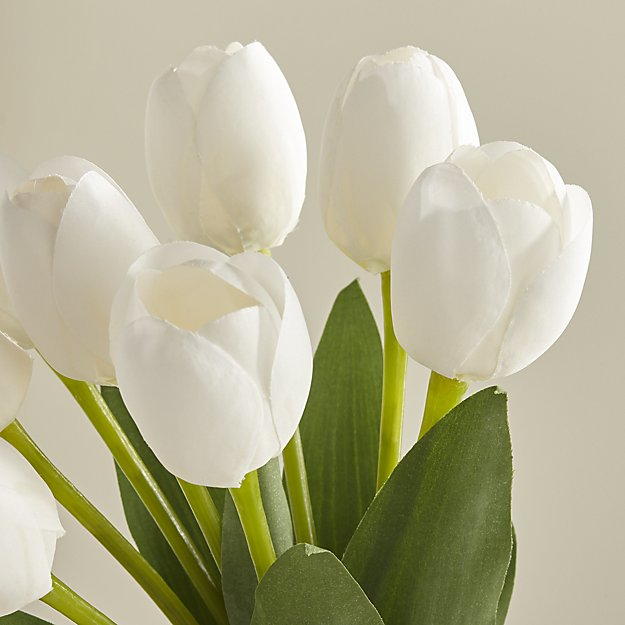
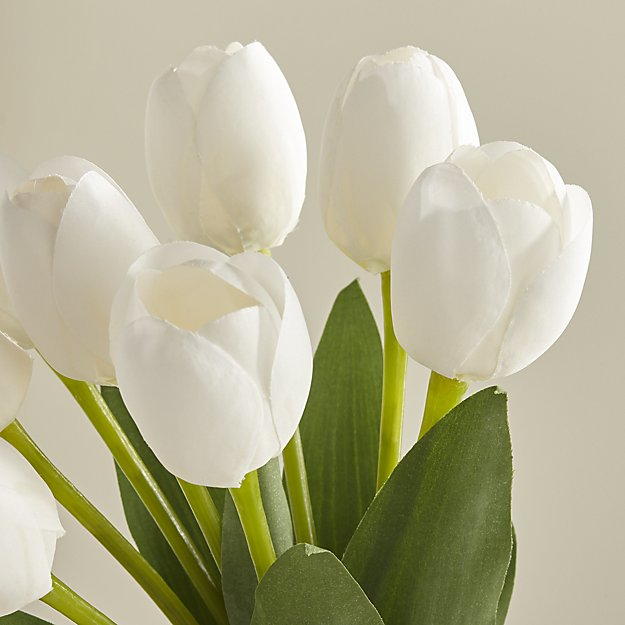

bunga bunga tropis memiliki warna cerah dan berbunga sepanjang tahun.
Bunga-bunga tropis antara lain bunga sepatu, teratai, kamboja,mawar, kenanga dll.
Bunga subtropis memiliki musim tertentu untuk berbunga.
contoh bunga subtropis antara lain : sakura, tulip.


 
